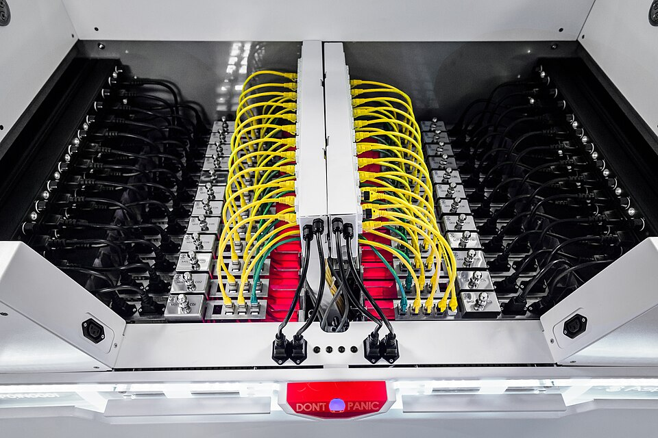

NVIDIA H100 한 장 700W, B200은 1000W. 데이터센터 한 동의 전력이 도시 한 개. 공랭으로는 못 식혀 — 액침 냉각(immersion cooling — 칩을 비전도성 액체에 통째로 담그는 냉각), 직접 액체 냉각(D2C)이 표준이 되어 갑니다.
트랜지스터를 작게 만들어도 — 전기를 안 쓰게 만들지는 못했습니다. 발열은 곧 한계입니다.